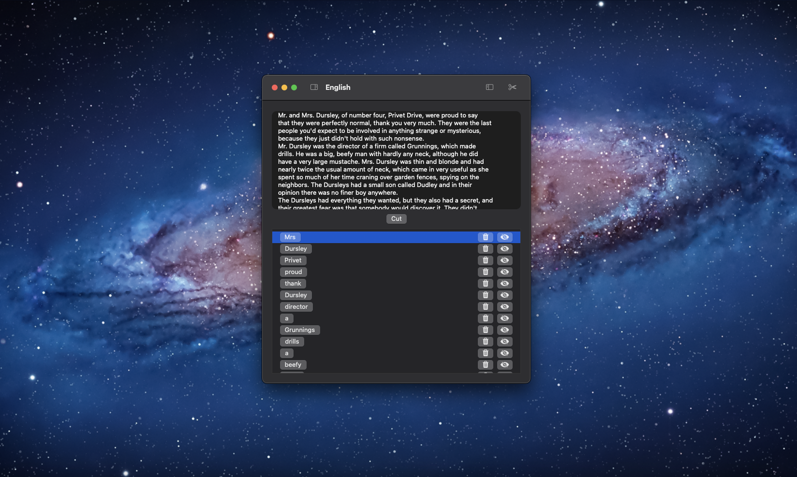

Download Free Trial
Buy Licence for $9.99
Version 3.9. Works on macOS Monterey, Ventura & Sonoma. EULA.

What if you could find new vocabulary from books, texts or film scripts with just one click?
Wilter helps you to learn new vocabulary. Enter text and let Wilter filter words which you don't know.
Register words which you already know, so Wilter knows which words you already know and shows you words which
you still do not know.
Support & Feedback
If you have any questions, suggestions, feedback, a bug to report, or just want to send us some appreciation,
we are listening at hello@wilter.co.
2024 Wilter. All rights reserved.